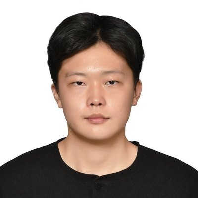

Wenmiao Jia
Computer engineering student at the University of Wisconsin–Madison, using satellite navigation signals to measure the atmosphere.
B.S. Computer Engineering, expected May 2028

News
- Oct 2026
- Inducted into Tau Beta Pi, the engineering honor society.
- Oct 2026
- Received the Paul H. Thiele Scholarship from the College of Engineering.
- Summer 2026
- Presented a first-author poster at the inaugural ECE SPARK Symposium. View poster
Research
Satellite navigation signals are slowed slightly as they pass through the lower atmosphere, and part of that delay is caused by water vapor. If the delay can be recovered precisely, an ordinary GNSS receiver becomes a weather sensor.
In the UW Connect Lab, advised by Prof. Bhuvana Krishnaswamy and Prof. Parmesh Ramanathan, I built a simulation pipeline to test how well that delay can be measured: SignalSim generates the satellite signals, GNSS-SDR acts as the receiver, and RTKLIB solves for position and atmospheric delay.
- Recovered an injected zenith tropospheric delay to within 2 cm, confirmed the recovery stays linear across a sweep of injected values, and cross-checked against an EarthScope/GAGE reference station.
- Ported the pipeline from L-band (1.5 GHz) to Ku-band (12 GHz), exploring whether broadband satellite downlinks could serve the same purpose.
- Quantified the noise cost of dual-frequency ionosphere-free processing in simulation: ±255 mm, against ±52 mm for single-frequency.
Atmospheric Sensing Using Global Navigation Satellite System
Interactive demo: how a satellite’s elevation changes the atmospheric delay
Engineering
Badger Solar Racing
Built the driver dashboard for the solar car — speed, turn signals, gear, and headlights — by decoding and encoding CAN messages from the vehicle’s components. Implemented cruise control to hold the car at its most energy-efficient speed.
Keypad door lock
Designed a custom board integrating a keypad, LCD, and servo driver around the Raspberry Pi Pico, with password validation and servo actuation.
Engineering Hall navigation
An indoor navigation app for Engineering Hall, with routing over a node graph using breadth-first search.
Honors
- ECE SPARK Summer Research Fellowship, inaugural cohort
- 2026
- Tau Beta Pi, Wisconsin Alpha chapter
- 2026
- Paul H. Thiele Scholarship, College of Engineering
- 2026
- Dean’s List, College of Engineering
- 2025–26